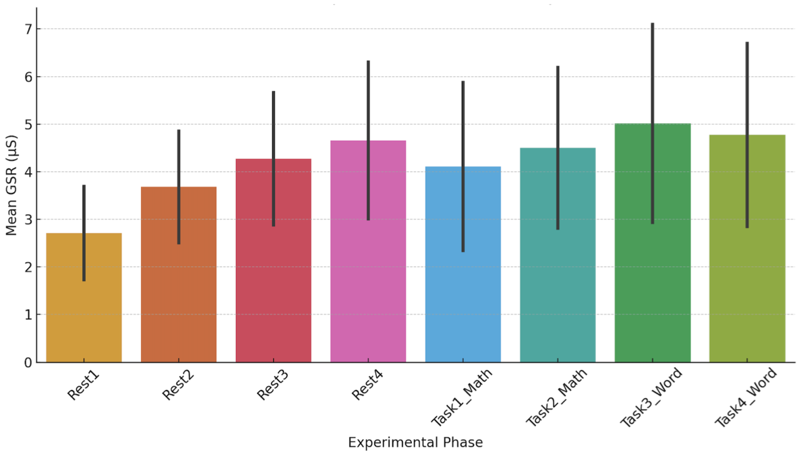

FeaturedIEEE/CVF ICCV Workshops · 2025
Sweating the Stress: GSR Insights into Cognitive Load and Distraction
Measured skin conductance while people did math and memory tasks, with and without sudden alarms. Thinking hard raised stress, surprise alarms raised it further, and a simple model detected stress with 91% accuracy.